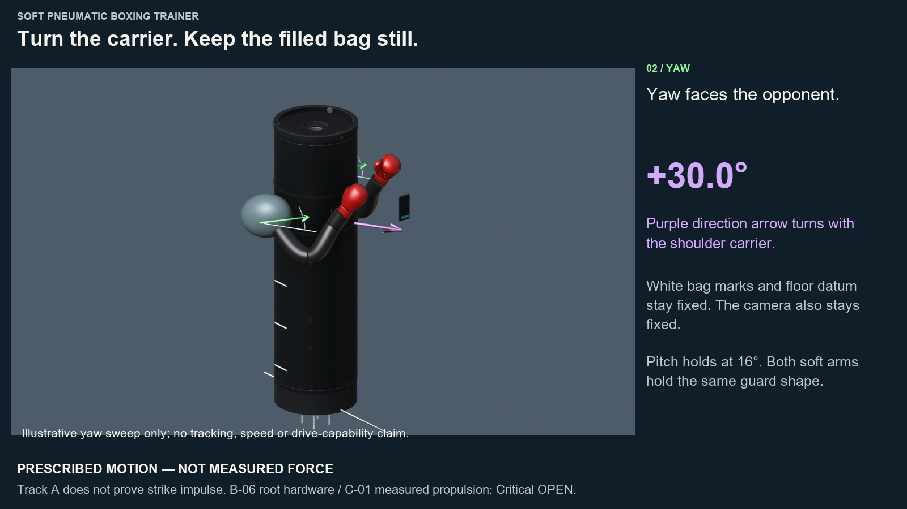
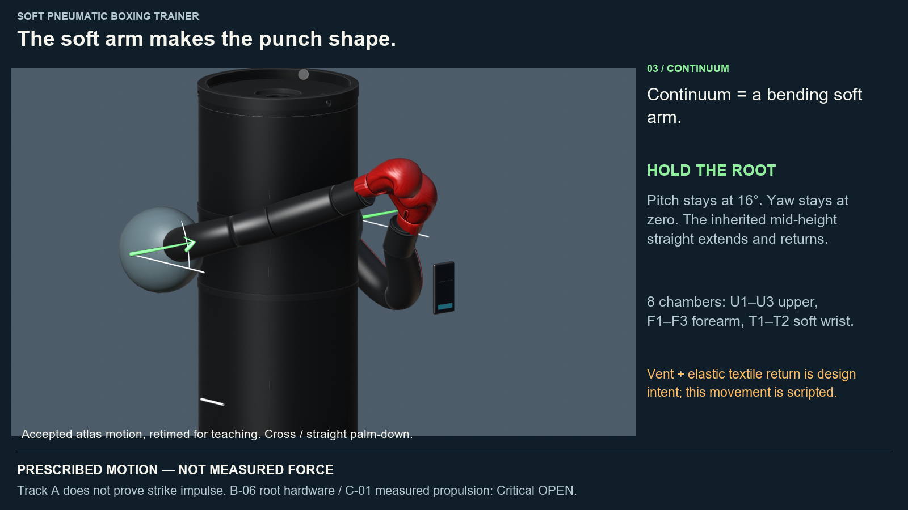
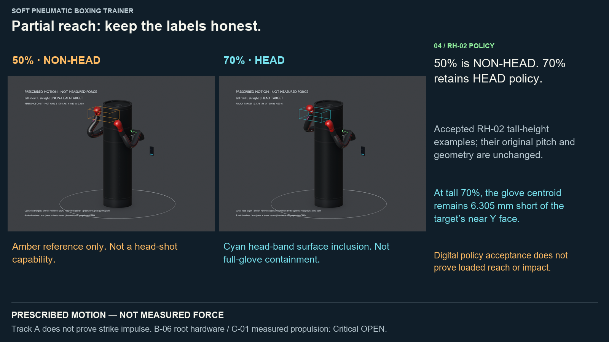

Make each motion visible.
One teaching film: shoulder tilt for height, carrier turning for direction, and the soft arm for punch shape. The accepted N3 atlas and airflow scenes remain intact.
Ready for Ola review. Track A does not prove strike impulse. B-06 root hardware and C-01 measured propulsion remain Critical OPEN.
Six key stills
 pitch short · prescribed motion — not measured force
pitch short · prescribed motion — not measured force pitch mid · prescribed motion — not measured force
pitch mid · prescribed motion — not measured force pitch tall · prescribed motion — not measured force
pitch tall · prescribed motion — not measured force
yaw callout · prescribed motion — not measured force
continuum callout · prescribed motion — not measured force
rh02 reminder · prescribed motion — not measured forceEngineering packet A–J
Evidence and integration
Blender successor · Teaching-scene audit · Accepted atlas regression · Lineage · Film decode · Packet verification · Manifest
Embed preview · Root-relative paths · Prepared front-door HTML. Existing START_HERE accepted-content gate is preserved pending Ola disposition.